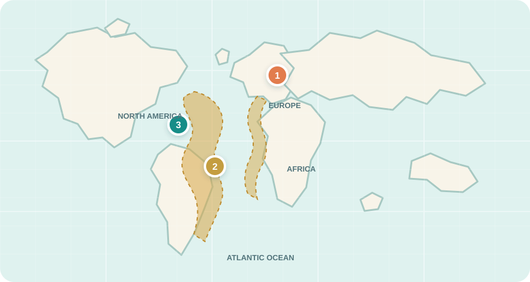

Piloun Pristis pectinata
Rejnok s pozoruhodným ozubeným rypcem a životem spjatým s mělkým pobřežím, ústími řek i řekami. Poznej, proč si tento starobylý druh zaslouží naši pozornost.
Proč se připomíná Mezinárodní den pilouna?
Mezinárodní den pilouna se připomíná každoročně 17. října. Upozorňuje na pilouny a nebezpečí, kterým čelí. Vznikl ve spolupráci Sawfish Conservation Society, programu Sawfish Species Survival Plan při Asociaci zoologických zahrad a akvárií (AZA SSP) a evropských a amerických asociací zoologických zahrad a akvárií. Jde o osvětový den podporovaný ochranářskými a zoologickými organizacemi, nikoli o den vyhlášený OSN.
Ověření: Sawfish Conservation Society ↗ · NOAA Fisheries ↗
Rozšířená karta pilouna
Doplňující informační karta s podrobnostmi nad rámec základního profilu zvířete.
Co je piloun?
Pilouni patří do čeledi rejnokovitých Pristidae. Jejich kostra je tvořená chrupavkou, nikoli kostí. Dlouhý plochý rypec zvaný rostrum má po stranách zubovité výrůstky. Nejde o běžné zuby: jsou pevně zasazené v rostrum a po ztrátě znovu nedorůstají.
Rostrum pomáhá pilounovi vnímat okolí a získávat potravu, ale může se také zachytit do rybářských sítí. Ústa a žaberní štěrbiny má piloun na spodní straně těla, podobně jako ostatní rejnoci. To je jeden z důvodů, proč řadíme pilouny mezi rejnoky, přestože mají siluetu podobnou žralokům.
Kde pilouni žijí?
Pilouni obývají tropické a subtropické pobřežní vody. Podle druhu využívají mělké zátoky, laguny, ústí řek lemovaná mangrovy i říční systémy. Mladí jedinci často potřebují chráněná mělká místa jako školky; některé druhy pronikají hluboko do sladké vody.
Pět druhů má rozdílná území výskytu. Piloun mnohozubý se dnes nejčastěji zaznamenává u pobřeží Floridy, zatímco další druhy žijí v částech Indo-Pacifiku, Afriky a Ameriky. Mapa níže proto ukazuje konkrétně areál pilouna mnohozubého, nikoli souhrnný rozsah všech pěti druhů.
Potrava a „pila“
Piloun mnohozubý se živí hlavně rybami, ale také krevetami a kraby. V rostru jsou smyslové póry, které zachycují slabé elektrické signály okolních živočichů. Piloun může ryjecem pohybovat ze strany na stranu a zasáhnout kořist.
Rostrum neslouží pouze k lovu; vědci ho popisují také jako smyslový nástroj. Jeho tvar, počet zubovitých výrůstků i velikost těla se mezi druhy liší, proto je vhodné uvádět přesná čísla vždy u konkrétního druhu.
Životní cyklus
Pilouni rodí živá mláďata. U pilouna mnohozubého se zárodek vyvíjí v těle matky a vyživuje se žloutkem; mládě se rodí plně vyvinuté. Zubovité výrůstky rostra má při narození zakryté měkkou pochvou, která chrání matku. Pochva brzy odpadne.
NOAA uvádí u pilouna mnohozubého 7–14 mláďat ve vrhu a předpokládanou březost kolem 12 měsíců. Údaje se liší podle druhu a nelze je zobecnit na všechny pilouny.
Kde piloun mnohozubý žije?
V mapě je Česko označeno jako naše domovská oblast. Piloun mnohozubý žije v teplých vodách Atlantiku; dnes se jeho známý výskyt soustředí hlavně na Floridu a blízké části Karibiku.

Mapa je zjednodušená a orientační; neznamená, že se piloun v každé vyznačené oblasti vyskytuje dnes. Podklady k areálu: NOAA Fisheries ↗
Ochrana a přežití
Pilouni patří mezi nejohroženější skupiny rejnoků. Jejich rostra se snadno zachytí do sítí, takže vážným rizikem je i nechtěný vedlejší úlovek. Populace ovlivňuje také rozvoj pobřeží, zánik mangrovů a ústí řek, změny říčního průtoku, přehrady i cílený rybolov. Pomalé zotavování činí ztráty dospělých jedinců a míst, kde vyrůstají mláďata, obzvlášť závažnými.
Přirozenými nepřáteli pilounů jsou také žraloci. Nejzranitelnější jsou menší a mladí jedinci, které mohou žraloci ulovit. Mláďata proto využívají mělké pobřežní vody a kořeny mangrovů jako úkryt.
Mezinárodní ochrana
Všechny druhy pilounů jsou zařazeny do přílohy I úmluvy CITES, která omezuje mezinárodní obchod s nimi. Pilouni jsou rovněž v příloze I Úmluvy o ochraně stěhovavých druhů (CMS). Konkrétní národní ochrana i stupeň ohrožení se liší podle druhu a oblasti. V USA uvádí NOAA některé populace pilouna mnohozubého i několik dalších druhů jako ohrožené podle Endangered Species Act.
Jak mohou lidé pomoci?
Kdo stojí za tímto dnem?
Mezinárodní den pilouna je společná osvětová iniciativa. NOAA uvádí, že vznikl jako partnerství Sawfish Conservation Society a evropských a amerických asociací zoologických zahrad a akvárií; partnerem je také program Sawfish Species Survival Plan při AZA. Nejde o oficiální mezinárodní den OSN.
Informační karty
Tři informační karty jsou připravené pro různé věkové skupiny.
Otevři kartu pro přepnutí mezi barevnou a černobílou verzí, stažení nebo tisk.
Omalovánky a příběhové obrázky včetně černobílých verzí najdeš výše u jednotlivých informací, nebo na webu vinmat.eu/worldforkids.
Zdroje a ověření
- Sawfish Conservation Society – International Sawfish Day (informace o Mezinárodním dni pilouna)
- NOAA Fisheries – International Sawfish Day (informace o dni a jeho partnerech)
- NOAA Fisheries – Smalltooth sawfish: science, habitat, food and reproduction (areál, prostředí, potrava a biologie pilouna mnohozubého)
- NOAA Fisheries – Largetooth sawfish, habitat and legal status (údaje o jiném druhu pilouna a jeho ochraně)
- CITES – Appendices and Pristidae listing (mezinárodní pravidla obchodu a příloha I)
- Convention on Migratory Species – Sawfish: A Global Strategy for Conservation (PDF) (mezinárodní strategie ochrany pilounů)
- Australian Marine Conservation Society – Sawfish species and regional threat categories (přehled druhů a regionálních hrozeb)
Kategorie jednotlivých druhů a vnitrostátní právo se mohou lišit; aktuální podrobnosti uvádějí propojené autoritativní zdroje.